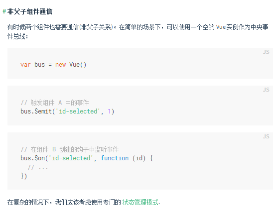
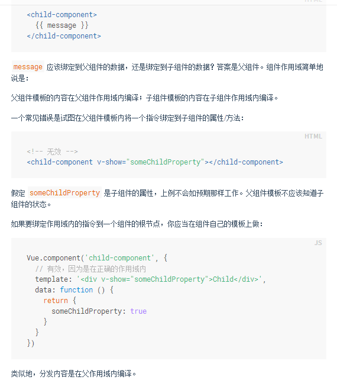
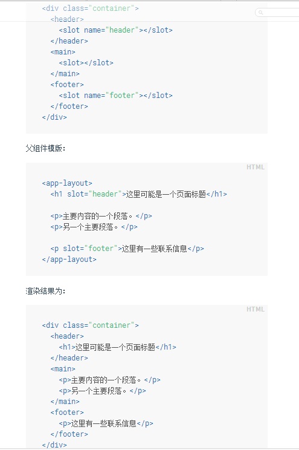
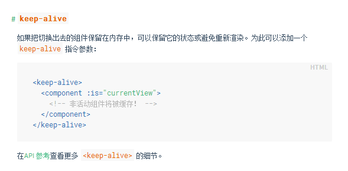

我们知道，父组件是使用 props 传递数据给子组件，但如果子组件要把数据传递回去，应该怎样做？那就是自定义事件!
子组件中v-on:自定义事件名称="对应触发的事件（方法）"
this.$emit('自定义事件名称');进行自定义事件提交
绑定自定义事件v-on:myincrement="incrementTotal1" 触发的事件为incrementTotal1
可以使用 .native 修饰 v-on 如下
先将组件中的变量counter与Vue中的total进行绑定，v-bind:counter="total" ;然后进行原生事件（click）的事件绑定：v-on:click.native="doTheThing"
Total: ${{ total }}
有时候两个组件也需要通信(非父子关系)。在简单的场景下，可以使用一个空的 Vue 实例作为中央事件总线：

在使用组件时，我们常常要像这样组合它们：
注意2点：
为了让组件可以组合，我们需要一种方式来混合父组件的内容与子组件自己的模板。这个过程被称为 内容分发 (或 “transclusion” 如果你熟悉 Angular)。Vue.js 实现了一个内容分发 API ，参照了当前 Web 组件规范草案，使用特殊的 <slot> 元素作为原始内容的插槽。

1、最简单容易理解的例子就是定义两个组件，如下：
组件一：child-component,template:<div></div>
组件二：parent-component,template:<div> <child-component></child-component> </div>
这是在我看来最容易理解的父子组件的关系，与其说是父子组件，不如把template看做主体。父template中使用了子template。
进一步理解，在使用父组件的时候，可以添加内容，如 myhtml:<parent-component>我的添加的内容</parent-component>
这样一来，其实上文的myhtml也相当于是一个template，现在再来理一下关系，还是从template的角度出发。
儿子：名称：child-component ; template:<div></div>
爸爸：名称：parent-component ; template：<div> <child-component></child-component> </div>
爷爷：名称：匿名 ; template：<parent-component>我的添加的内容</parent-component>
作为儿子的存在，如果直接在html中这样使用组件child-component：<child-component>我的添加的内容</child-component>那这位（这个template）的角色按照我们上文的理解，应该算是...嗯，干爹！
干爹：名称：匿名 ； template：<child-component>我的添加的内容</child-component>
个人认为：理解上面的关系对于Vue.js中理解组件的相关知识很重要。比如下面的slot就很容易理解
然后针对“我的添加的内容”有一个问题，上文的家族成员的template都很为简洁，现在比如将儿子的template换成：
<div><div>
div1
</div><div>div2
</div></div>这样我们的父template在使用的时候：<div> <child-component>我的添加的内容</child-component> </div>中“我的添加的内容”该在子template中何处渲染呢？
Vue.js引入一个标签<slot>进行占位操作，如将我们的子tenplate改为：
<div><div>
<slot>div1</slot>
</div><div>div2
</div></div>现在我们父template渲染的时候，“我的添加的内容”就会找到slot这个标签所在的位置，进行替换。渲染结果：
<div> <div><div>
我的添加的内容
</div><div>div2
</div></div> </div>在此基础上，标签slot还可以用一个特殊的属性 name来进行标示，这样一来，我们就可以有多个slot，也就是多个占位了。好处是显而易见的。
官方文档例子：

